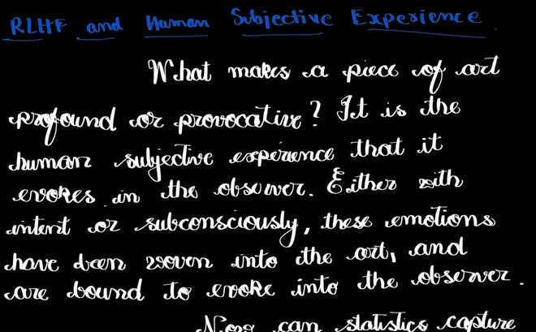

Writing
I write most of these by hand, in one sitting. Each handwritten piece comes with a typed transcript.
Handwritten
Essay · 23 Nov 2026 · 2 minRLHF and Human Subjective Experience

Statistics can tell humour from horror. It can't tell you why depth needs friction, and RLHF trains that friction away.
Essay · 17 Nov 2026 · 3 minWhat is it about arts that makes it so “human”

Art has no meaning outside the human mind. So what happens to it when we hand our thinking to models?
Typed
Note · 27 Sep 2026 · first on SubstackA hundred billion thousand planets
A note on choosing research over everything else, written from the pale blue dot.
Elsewhere
Shorter notes go to Substack first.